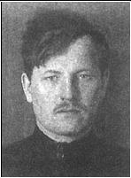

Залуцкий П.А.
Залуцкий Пётр Антонович
Российский революционер, советский партийный и государственный деятель.
02.1887 – 10.01.1937
Происходил из крестьянской семьи. Окончил одноклассное училище. В 1904 г. примкнул к революционному движению. Участник Революции 1905—1907 гг. В 1907 г. вступил в РСДРП, с 1911 г. примкнул к большевикам. Вел партийную работу в Петербурге, Чите, Владивостоке. С 1911 г. в Петербурге, работал на Франко-русском заводе, сотрудничал в газетах «Звезда» и «Правда», с 1916 г. был членом Исполнительной комиссии Петербургского комитета и Русского бюро ЦК РСДРП. Неоднократно подвергался арестам и ссылкам. После Февральской революции 1917 г. являлся членом исполкома Петроградского Совета, был делегатом VII (Апрельской) конференции и VI съезда РСДРП(б). В октябре 1917 г. — член Петроградского военно-революционного комитета. В 1918—1920 гг. — политработник в Красной армии. С июня 1919 г. по январь 1920 г. — председатель Курского губернского революционного комитета. С 1920 г. — член Президиума и секретарь ВЦИК. В 1920—1922 кандидат в члены, в 1923—1925 гг. член ЦК РКП(б). С мая 1921 г. кандидат в члены, с августа 1921 г. по апрель 1922 г. — член Оргбюро ЦК. В 1922 г. секретарь Уральского губкома партии. С апреля 1922 г. по ноябрь 1925 г. был ответственным секретарём Петроградского (Ленинградского) губернского комитета ВКП(б), одновременно секретарём Северо-Западного бюро ЦК ВКП(б). Активный деятель «Новой оппозиции», а в 1926—1927 г. «объединенной оппозиции». В декабре 1927 г. на XV съезде ВКП(б) был исключен из партии в числе других членов троцкистской оппозиции. В июне 1928 г. восстановлен в ВКП(б) после признания своих ошибок. С 1928 по 1932 гг. был председателем Нижневолжского краевого Совета народного хозяйства, затем — начальником строительства Шатурской ГРЭС, в 1934 г. — управляющим Всесоюзным трестом «Строймашина». В декабре 1934 г. вновь исключен из ВКП(б) и арестован по делу «ленинградской контрреволюционной зиновьевской группы». 16 января 1935 г. Особым совещанием при НКВД СССР приговорен к 5 годам лишения свободы. Отбывая наказание, 9 декабря 1936 г. был вновь привлечён в качестве обвиняемого и этапирован в Москву. 10 января 1937 г. приговорён Военной коллегией Верховного суда СССР к смертной казни по обвинению в контрреволюционной террористической деятельности и в тот же день расстрелян. Реабилитирован Военной коллегией Верховного суда СССР 21 июня 1962 г., восстановлен в партии 5 сентября 1962 г.
| Ербанов М.Н.< Prev | Next >Запорожец П.К. |
|---|